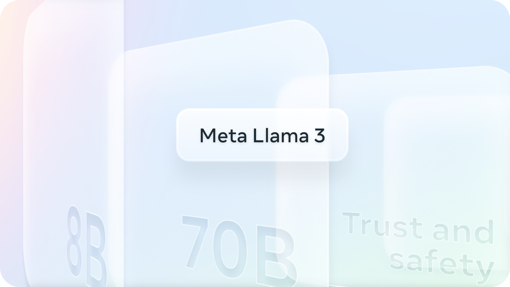
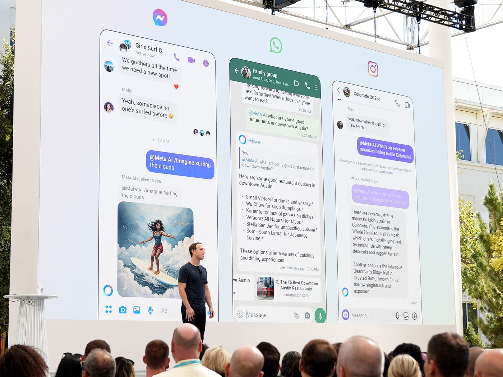

메타가 Llama3를 공개했다

- 메타가 새로운 고성능의 AI 모델인 Llama3를 공개했습니다.
-
이번 모델 발표는 AI 연구, 개발에 있어 새로운 이정표를 세웠다고 평가됩니다. 왜냐하면 메타가 Llama3도 이전 모델과 마찬가지로 오픈소스로 공개했기 때문이죠.
-
오픈AI의 GPT-4, 앤트로픽의 Claued3 모두 사용자가 돈을 지불해야하는 폐쇄형 모델입니다. 하지만 메타의 Llama3는 오픈소스라 모델의 코드, 아키텍처, 학습 프로세스 등 관련 정보를 누구나 사용할 수 있습니다. 무료로요.
Llama3의 스펙 뜯어보기
- 현재 공개된 Llama3 모델은 매개변수 8B짜리와 70B 버전입니다.
-
개발중인 400B+(405B)는 올해 말에 출시할 예정입니다. 70B 모델은 오픈소스임에도 Claude3의 Sonnet와 비슷한 성능을 발휘하고 있습니다. 위의 그래프에서 그 성능을 비교해볼 수 있습니다. 400B+(405B)는 중간 성능만 공개했는데 GPT-4와 Claude3 Opus와 경쟁상대가 될 것으로 예측됩니다.
- 이번 모델은 2개의 24K H100 클러스터에서 15T 토큰 이상의 데이터로 학습되었습니다.
-
학습에 사용된 데이터셋은 모두 공개된 소스에서 수집했다고 하고요. 메타는 Llama3 발표에 앞서, Llama3 모델을 훈련하기 위한 신규 GPU 클러스터, 24K H100를 공개했습니다. 24K H100는 엔비디아의 텐서코어 H100 GPU가 모두 24,576개(24K)있는 클러스터입니다. 메타는 2024년 말까지 35만개의 H100을 추가해 포트폴리오를 확장할 계획이라고 합니다.
- Llama3 학습을 위해 데이터 병렬 + 모델 병렬 + 파이프라인 병렬화 결합이 이뤄졌습니다
-
이 방법을 이용했더니 GPU당 최대 400TFLOPS 이상의 활용도를 달성했다고 합니다. 참고로 FLOPS는 초당 수행되는 부동 소수점 연산 규모를 의미하는 컴퓨터 성능 단위입니다.
- 모델의 유연성과 정확성을 높이기 위해 인스트럭션 튜닝도 많이 이뤄졌습니다.
-
인스트럭션 튜닝은 fine-tuning과 in-Context Learning의 장점을 결합한 전략입니다. 메타는 SFT(Supervised fine-tuning) + PPO(proximal Policy Optimization) + DPO(Direct Preference Optimization) + RS(rejection Sampling)을 조합해 튜닝을 진행했습니다. 튜닝에 사용한 데이터에는 인스트럭션 데이터 셋 뿐만 아니라 10M개 이상의 사람이 손수 주석을 단 예제가 포함되었다고 합니다.
메타 SNS에 적용되는 메타AI

- Meta의 SNS인 Facebook, Instagram, WhatsApp, Messenger에도 메타AI가 적용됩니다.
-
30억 명의 사용자가 AI 모델을 사용할 수 있기에 파괴력이 클 것으로 예측됩니다. 메타 AI가 적용된 이후엔 WhatsApp에서 구글에서 검색하듯이 질문할 수도 있습니다. Facebook의 게시물에 올라온 이미지에 대한 추가 정보를 확인할 수도 있습니다. Instagram에서 실시간 움직이는 이미지를 생성해서 DM을 보낼 수 있고요. Llama3를 기반으로 제작된 Meta AI는 meta.ai라는 독립 애플리케이션으로도 이용할 수 있습니다.
오픈소스를 선택한 메타AI
- 모델의 뛰어난 성능도 집중할 지점이지만 더 중요한 건, Llama3는 오픈소스 모델이라는 겁니다.
-
다른 기업들과 달리 메타는 AI 모델에 있어서 오픈소스로 접근하고 있습니다. GPT 등, 폐쇄형 모델을 활용하기 위해선 API 호출에 의존해야 하고 비용도 듭니다. 하지만 Llama3는 공개된 코드를 바탕으로 이용자가 맞춤형으로 모델을 만들 수 있습니다.
- Local하다는 장점도 있습니다.
-
이용자의 데이터는 이용자 기기에 저장되기에 인터넷 없이도 사용할 수 있죠 iPhone MLX로 Locally 작동되는 Llama3의 모습을 볼 수도 있습니다.
오픈소스에 대한 저커버그의 생각
- 메타의 마크 저커버그는 한 팟캐스트에서 오픈소스에 대한 자신의 생각을 밝혔습니다.
-
팟캐스트는 여기에서 들을 수 있고, 스크립트를 번역해 옮겨보겠습니다.
-
🎙파텔: 100억 달러짜리 모델이 완전히 안전하다고 판단되었다고 가정해봅시다. 이런 경우에 100억 달러 모델을 오픈 소스로 공개할 생각이 있습니까?
-
🦎저커버그: 우리에게 도움이 된다면, 그렇게 할 겁니다.
-
🎙파텔: 연구 개발에 100억 달러를 들였는데, 오픈 소스로요…?
-
🦎저커버그 : 돈 문제는 시간이 지나면서 평가해봐야 할 문제입니다. 우리는 이미 소프트웨어를 오픈 소스로 공개하는 긴 역사가 있습니다. 물론 제품을 오픈 소스로 만들지는 않습니다. 인스타그램의 코드를 오픈 소스로 공개하지 않죠. 하지만 저수준 인프라는 많이 오픈 소스로 만들었습니다. 가장 큰 예가 ‘오픈 컴퓨트 프로젝트’일텐데, 이 프로젝트에서는 서버, 네트워크 스위치, 데이터 센터의 설계를 모두 오픈 소스로 만들었고 이는 매우 유용했습니다. 많은 사람들이 서버를 설계했지만, 업계는 저희 디자인을 표준으로 채택했고, 이로 인해 공급망이 저희 디자인을 중심으로 구축되어 비용이 절감되었습니다. 이로 인해 수십억 달러를 절약했고, 이는 정말 멋진 일이었습니다.
-
오픈 소스가 우리에게 도움이 되는 여러 가지 방법이 있습니다. 예를 들어, 사람들이 모델을 더 저렴하게 운영하는 방법을 알아내면, 우리는 수십억, 아니 수백억 달러 이상을 이러한 것들에 투자할 것입니다. 따라서 이를 10% 더 효율적으로 수행할 수 있다면, 우리는 수십억 달러를 절약할 수 있죠. 그 자체로 매우 가치가 있습니다. 특히 다른 경쟁 모델이 존재한다면, 우리의 모델이 무언가 놀라운 이점을 제공하는 것은 아닙니다. (중략)
-
🦎저커버그 : 모바일 생태계에 대해 제가 생각하기에 불만스러운 점은, 애플과 구글과 같은 두 개의 게이트키핑 업체가 있어서 무엇을 만들 수 있는지 그들이 결정할 수 있다는 것입니다. 일단 경제적인 측면이 있을 겁니다. 즉, 우리가 무언가를 만들면 두 기업이 우리의 돈을 많이 가져갑니다. 하지만 더 심각한 것은 질적인 측면인데, 이것이 사실 저를 더 화나게 하죠. 우리가 새로운 기능을 출시하거나 출시하고자 할 때마다 애플이 “안 돼, 출시하지 마”라고 하는 경우가 많습니다. 이것은 정말 문제입니다, 맞죠? 그렇다면 AI와 관련해서도 비슷한 상황이 벌어진다면 어떨까요? 소수의 회사들이 이러한 폐쇄된 모델을 운영하고 API를 통제함으로써 여러분이 무엇을 만들 수 있는지 결정할 수 있게 될 겁니다.
메타가 생각했을 때, 다른 회사들이 우리에게 무엇을 만들 수 있는지를 지시하는 상황에 처하지 않도록 스스로 모델을 만드는 것이 가치 있다고 생각합니다. 오픈 소스 관점에서 볼 때, 많은 개발자들도 이러한 회사들이 무엇을 만들 수 있는지 지시받고 싶어하지 않습니다. 따라서 중요한 질문은 이런 상황에서 어떤 생태계가 구축될 것인가, 어떤 흥미로운 새로운 것들이 나올 것인가, 그리고 이것이 우리 제품을 얼마나 향상시킬 수 있을까 일 겁니다. 만약 이것이 우리의 데이터베이스나 캐싱 시스템, 아키텍처와 같다면, 커뮤니티의 가치 있는 기여로 인해 우리의 제품이 개선되겠죠. 우리의 앱 특화 작업도 여전히 충분히 차별화되어 있기 때문에 크게 문제되지 않을 것입니다. 우리는 이득을 보고, 우리와 커뮤니티의 시스템 모두가 오픈 소스로 인해 개선될 것입니다.
한편으로는 그렇지 않을 수도 있는 세계가 있을 수도 있습니다. 모델 자체가 제품이 되는 경우가 그렇겠죠. 그렇다면 그것을 오픈소스로 내 놓는 것은 더 까다로운 경제적 계산이 될 수 있습니다. 그럼 자신을 상품화하는 것이니까요. 하지만 지금까지 본 바로는 우리가 그런 상황에 처해 있지 않은 것 같습니다.